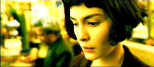

| Amélie (SE)/ B+, A- |
| Miramax/2001/129/ANA 2.35 |
Amélie is one of those thoroughly enjoyable
films that comes along perhaps only once every decade. The sheer joy with
which writer/director Jean-Pierre Jeunet infuses his film with is
certainly infectious. And what a great choice the wonderful Audrey Tautou is
for the title role. Her open face with a hint of pixie behind the eyes is
scrumptious. Tautou has a startlingly fresh presence. She has absolutely
wonderful energy.
Jeunet opens Amélie with a delicious short
course montage of scenes depicting Amélie from birth to present.
It's sparkles with imagination and sets the terrific fast-paced eccentric
tone. Jeunet's slick and often off-kilter visual style lends itself
perfectly to the material, adding a layer of delight. The opportunities
for hyper-reality that he seeks out deliver capital entertainment, like
the cartoon beating heart of our infatuated heroine. It's all a wonderful
modern day fairy tale with a very different princess indeed!
 |
|
Pondering the results of her
deed. ©Miramax
|
Amélie is a waitress in an oh-so-very
charming restaurant. The film focuses on her special interaction with the
people around her. The heart of the plot focuses on Amélie's discoveries
about people and her propensity to create joy. When a photo booth mystery
captures her imagination, everything drives her to piece together the
mystery of the torn photographs, inevitably leading her to her won
romantic quest. Jeunet takes a certain devilish delight in depicting the
journey.
Jeunet succeeds in building a very special world
in which Amélie can exist as a natural presence. Amélie is
about romance, optimism, finding the joy of living and sharing it. Jeunet
works his supporting cast well. Mathieu Kassowitz works well as the gangly
Nino, the object of Amélie's affection. Kassovitz's dry withdrawn style
mixes perfectly with Tautou's more engaging presence.
Outstanding production design and beautiful
cinematography. Jeunet delivers a first-rate package from start to finish.
The charming Paris street music that provides a dancing feel for Amélie
adds to the overall joy, blending well with the visual style. About the only minor negative comment I have about Amélie is that
perhaps there's a bit too much torture of Nino by Amélie. There's a
repetitious sense about this long section of the film.
Amélie is a candy-colored celebration on DVD. The modern fairy
tale is enhanced by rich saturated primaries and a slightly warm overall
wash. It's very sharp, the resolution is maxed. Black levels are creamy.
The overall glow of the film comes through exceedingly well. The Dolby
Digital 5:1 surround is delightfully open and Jeunet's use of sound is
effectively transferred to DVD. English subtitles are easy to read and
enjoy.
Attractive slipcase packaging with a gatefold jacket for the two
disc set. Disc one includes English and French commentaries by director
Jean-Pierre Jeunet. Jeunet mentions pushing the green for the DVD
and in retrospect feels he may have gone too far. So, for those who
remember a difference between the theatrical look and the DVD, it may be
intentional. Disc two includes The Look of Amélie is a twelve minute
short. The Fantasies of Audrey Tautou is a charming two minute compilation
Tatou outtakes. There are screen tests for Tatou, Urbain Cancelier who
plays the grocer and Yolande Moreau who is Amélie's concierge. A 24 minute
English Q & A with director Jeunet that took place at a screening is
also included. There's also a short additional Q & A with the cast and
director in French. A one-minute montage of storyboard to film comparisons.
A twenty minute conversation in French with Jeunet. Jeunet talks about his
enthusiasm for DVD and commentaries, which is terrific support for the
medium.
|
|
|
|

Nights of Cabiria(SE)A,A
Bravura simplicity of Fellini’s vision perfectly mates with the
unadorned tale of Cabiria, the feisty yet innocent prostitute. Don't
pass it up.

The Movie Poster
Archive includes extensive poster images from the films of stars like
Susan Hayward, Kirk Douglas, Katharine Hepburn and many more. Our
featured star is Doris Day.

 Have you visited Home Theater
Talk lately? One of the friendliest places on the Net for
Home Theater and DVD discussion, you can get help for installation
problems or simply share your opinions with other Vidiots. Have you visited Home Theater
Talk lately? One of the friendliest places on the Net for
Home Theater and DVD discussion, you can get help for installation
problems or simply share your opinions with other Vidiots.

DVD reviews for women
from a woman's point of view

The official site for information about the great comic
director. A treat for connoisseurs of classic Hollywood madcap.
MRQE
Find reams of movie and DVD reviews at the Movie Review Query
Engine, a index of reviews appearing on the Internet.

Mystery writer Fred Hunter digs into classic films on DVD. Check out his
insightful reviews at The Classics on DVD.

ISF Course Instructors Jim Burns and Kevin Miller are hosting the Digital Film Forum. Join
professionals and enthusiasts for lively home theater discussion.
|